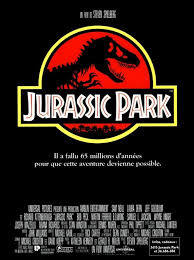
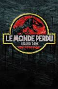
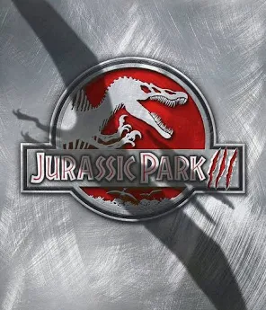
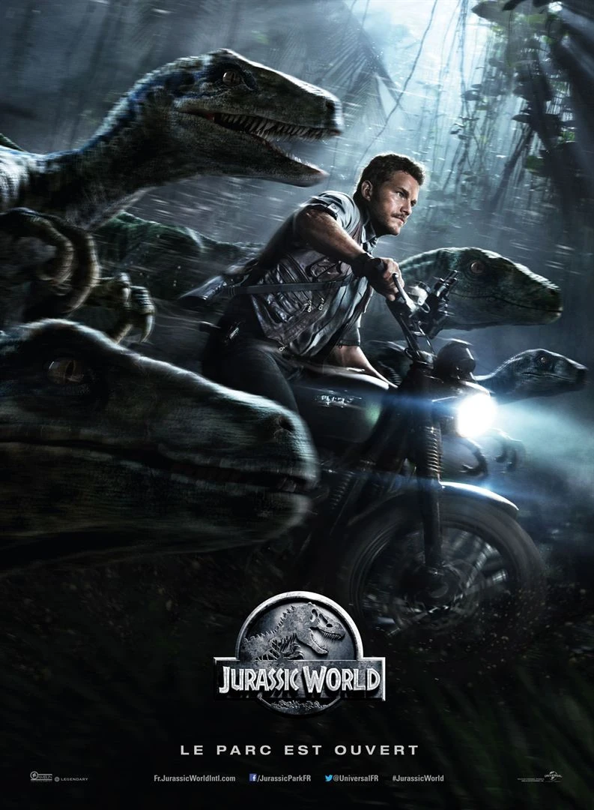
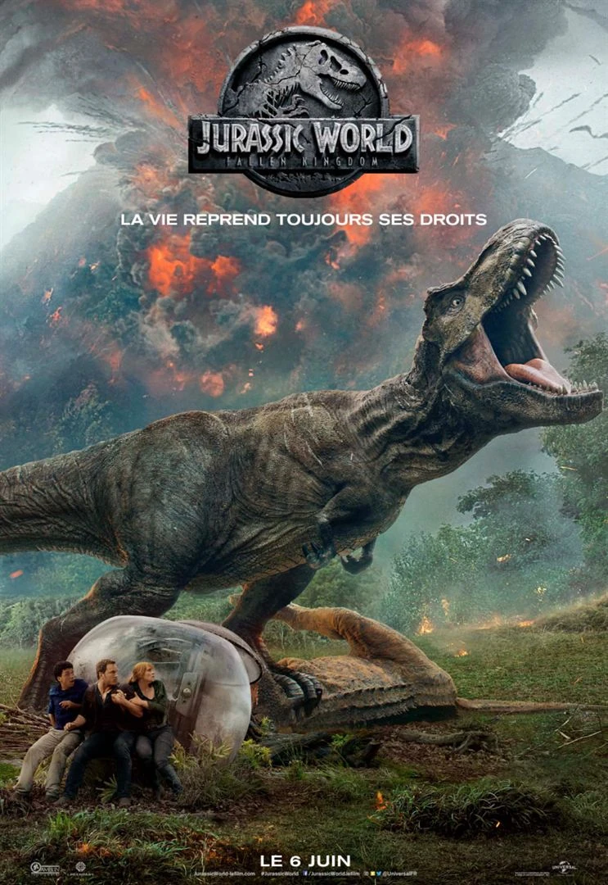
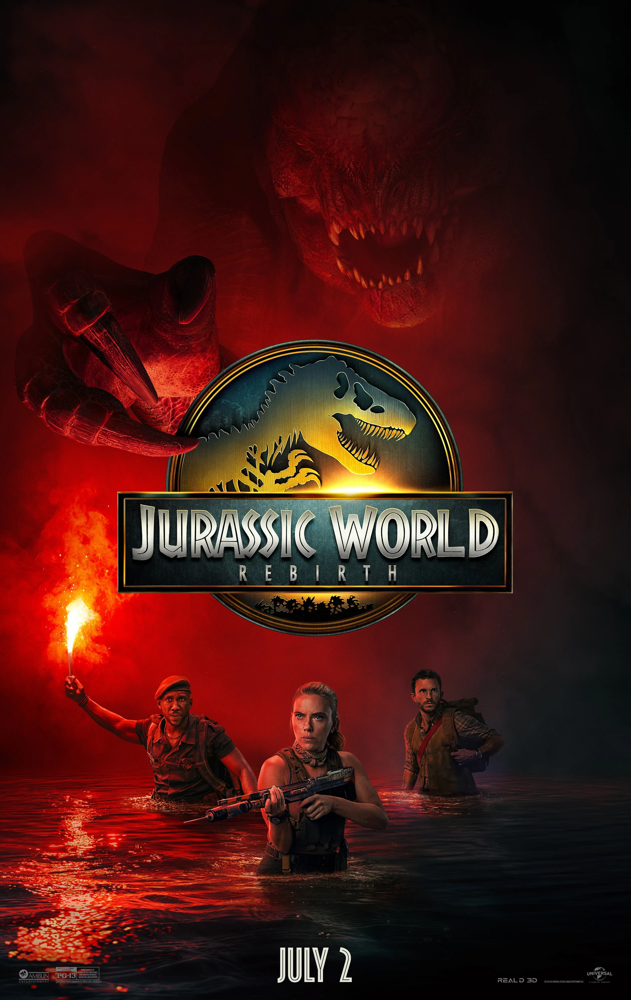

Jurassic Park (1993)

Réalisateur : Steven Spielberg
Résumé : John Alfred Hammond, le PDG de la puissante compagnie InGen, parvient à donner vie à des dinosaures grâce à la génétique et décide de les utiliser dans le cadre d’un parc d'attractions qu’il compte ouvrir sur une île au large du Costa Rica. Avant l'ouverture, il fait visiter le parc à un groupe d'experts pour obtenir leur aval. Pendant la visite, une tempête éclate et un informaticien corrompu par une entreprise rivale en profite pour couper les systèmes de sécurité afin de voler des embryons de dinosaures. En l'absence de tout système de sécurité pendant plusieurs heures, les dinosaures s'échappent sans mal, mais le cauchemar des visiteurs ne fait que commencer.
Voir la bande-annonceLe Monde perdu : Jurassic Park(1997)

Réalisateur : Steven Spielberg
Résumé : Le film se déroule quatre ans après le désastre de Jurassic Park. Sur une île déserte, voisine de celle où se trouve le parc, vivent secrètement d'autres dinosaures en liberté. Informés de leur existence, des hommes d'affaires élaborent un plan pour les ramener. Une expédition se monte alors pour capturer les dinosaures. John Hammond, récemment démis de la présidence de sa compagnie InGen, souhaite se racheter de son erreur passée. Nouveau défenseur de la nature, il sollicite Ian Malcolm afin d'étudier le comportement des dinosaures dans leur environnement. Tous deux doivent faire vite car les mercenaires sont sur le point de débarquer sur l'île. Les deux groupes, animés d'intentions opposées, vont d'abord s'affronter avant de s'unir face au danger plus grand qui les menace.
Voir la bande-annonceJurassic Park III (2001)

Réalisateur : Joe Johnston
Résumé : Comme dans l'opus précédent, l'histoire se déroule sur l'île fictive d'Isla Sorna, située dans l'océan Pacifique au large du Costa Rica. Quatre ans ont passé depuis l'incident de San Diego[2]. Le film met en scène un couple (William H. Macy et Téa Leoni) incitant le paléontologue Alan Grant (Sam Neill), rescapé du premier parc, à se rendre sur l'île peuplée de dinosaures pour les aider à retrouver leur fils (Trevor Morgan), porté disparu depuis huit semaines.
Voir la bande-annonceJurassic World(2015)

Réalisateur : Colin Trevorrow
Résumé : Le film débute alors que le milliardaire Simon Masrani a rendu possible le rêve de John Hammond : l'ouverture d'un gigantesque parc d'attractions centré sur l'exposition de dinosaures vivants, clonés à partir de leur ADN fossilisé dans l'ambre. Vingt-deux ans après l'ouverture de Jurassic Park, le « plus grand parc à thème jamais construit dans l'histoire humaine », les scientifiques sous l'autorité de Claire Dearing (Bryce Dallas Howard) tentent de trouver une nouvelle attraction digne de captiver les milliers de visiteurs arrivant chaque jour par bateau du Costa Rica. Deux spécimens femelles d'une nouvelle « espèce » de dinosaures : Indominus rex, hybride de plusieurs dinosaures (dont notamment le T-Rex et le raptor) créée par l'Homme, voient ainsi le jour. Mais après avoir tué et mangé sa jumelle, l'une de ces créatures s'échappe et sème la terreur dans le parc. Une gigantesque traque est alors menée par Vic Hoskins (Vincent D'Onofrio), responsable de la sécurité. Au même moment, Zach (Nick Robinson) et Gray (Ty Simpkins), les neveux de Claire envoyés sur l'île par leurs parents, bénéficient d'un laissez-passer pour profiter de toutes les attractions, mais se retrouvent sur la route du dangereux dinosaure. L'espoir de mettre fin à la menace reptilienne repose alors sur Owen Grady (Chris Pratt), dompteur d'un groupe de vélociraptors.
Voir la bande-annonceJurassic World: Fallen Kingdom(2018)

Réalisateur : Juan Antonio Bayona
Résumé : Le film se déroule trois ans après les événements du parc Jurassic World. Les dinosaures sont redevenus les maîtres d'Isla Nublar, une île au large du Costa Rica. Ils se retrouvent cependant menacés d'extinction lorsque le volcan de l'île, jusque là endormi, s'apprête à entrer en éruption. Ancienne dirigeante du parc, Claire Dearing préside désormais une association pour la protection des dinosaures. Elle se bat aujourd'hui pour sauver les derniers dinosaures de la planète. Alors que tout le monde lui tourne le dos, un dénommé Benjamin Lockwood — ancien collègue et ami de John Hammond — la contacte pour soutenir son projet. Celui-ci lui propose d'aller sauver les animaux piégés sur Isla Nublar et de les amener dans un « sanctuaire » spécialement créé pour les protéger, loin des humains. Claire reprend contact avec Owen Grady. Ils se rendent sur l'île, accompagnés de l'équipe de mercenaires de Lockwood pour accomplir leur mission le plus rapidement possible.
Voir la bande-annonceJurassic World Dominion (2022)

Réalisateur : Colin Trevorrow
Résumé : Quatre ans après l'éruption volcanique cataclysmique sur Isla Nublar et l'incident du manoir Lockwood, les dinosaures parcourent librement la Terre. Claire Dearing (Bryce Dallas Howard), ancienne responsable des opérations de Jurassic World, travaille toujours pour le Dinosaur Protection Group. Elle et Owen Grady (Chris Pratt) vivent dans une cabane isolée dans les montagnes de la Sierra Nevada, s'occupant secrètement de Maisie Lockwood (Isabella Sermon), la petite-fille clonée de Benjamin Lockwood. Blue, la femelle vélociraptor dressée par Owen, revient de manière inattendue avec une progéniture conçue de manière asexuée que Maisie nomme Beta.
Voir la bande-annonceJurassic World Rebirth (2025)

Réalisateur : Gareth Edwards
Résumé : Ce film raconte l’histoire 9 ans après la destruction d'Isla Nublar, les dinosaures, inadaptés à la flore et à la faune contemporaines, commencent à disparaître de la surface de la Terre. Une experte, Zora Bennett, est engagée pour mener une mission secrète. Son équipe doit récupérer l'ADN des 3 plus grands reptiles préhistoriques du monde (Mosasaurus, Titanosaurus et Quetzalcoatlus) regroupés sur la même île isolée, l'île Saint-Hubert situé au large de la Guyane française. Zora et son équipe vont croiser Reuben Delgado et ses enfants, dont le bateau a chaviré. Tous vont se retrouver sur l'île renfermant le tout premier laboratoire de Jurassic World, où ont été créées des espèces mutantes, hybrides ou difformes n'ayant jamais été révélées à l’humanité jusqu’à aujourd’hui[1].
Voir la bande-annonce